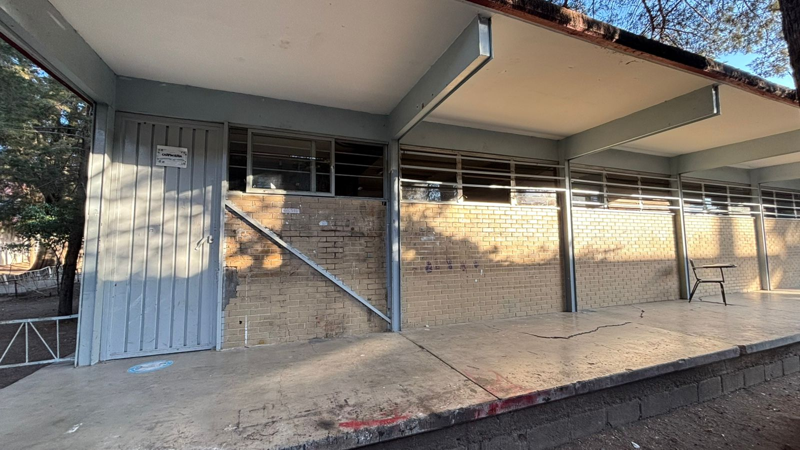

Proceso en Carpintería:
Lo que hacemos⚙️
El Taller de Carpintería promueve el desarrollo de habilidades manuales, técnicas y creativas
mediante el diseño y elaboración de productos en madera. El estudiantado aprende a utilizar
herramientas, interpretar planos y aplicar procesos de medición con precisión y seguridad. Más allá
de la fabricación de objetos, este taller fortalece valores como la disciplina, el cuidado de los
recursos y el trabajo en equipo, vinculando el aprendizaje con proyectos útiles para la comunidad y
fomentando una cultura de emprendimiento responsable.

•1. Conocer la Materia Prima: Aprendemos a identificar diferentes tipos de madera (como pino, encino, caoba, cedro), sus propiedades, sus usos ideales y, crucialmente, su origen. Esto nos lleva directo a la sustentabilidad. Entendemos que la madera proviene de árboles y que nuestro trabajo debe ir de la mano con el cuidado del medio ambiente, promoviendo el uso de maderas de cultivo o certificadas.
2. Diseñar y Planificar: Antes de cortar una sola pieza, imaginamos, dibujamos y planeamos. Usamos herramientas tradicionales como el lápiz y la regla, pero también software de diseño moderno.
Calculamos medidas, resistencias y materiales. Transformamos una idea en un plano.
3. Dominar las Herramientas y Máquinas: Desde las manuales (serruchos, cepillos, formones) hasta las eléctricas (taladros, caladoras, lijadoras) y, en un nivel más avanzado, maquinaria de industria (sierras circulares de banco, cepillos de superficie). Aprendemos a usarlas con seguridad, precisión y responsabilidad.
4. Construir y Transformar: Aquí es donde ocurre la magia. Con nuestras manos y conocimientos, convertimos una tabla en una silla, un librero, un juguete, una puerta, una escultura o incluso la estructura de una casa. Es el momento de poner a prueba nuestra creatividad y habilidad técnica.
5. Terminar y Proteger: Aprendemos a resaltar la belleza natural de la madera con técnicas de lijado, aplicación de tintes, barnices y selladores. Esto no solo embellece, sino que protege nuestras creaciones para que duren por generaciones.